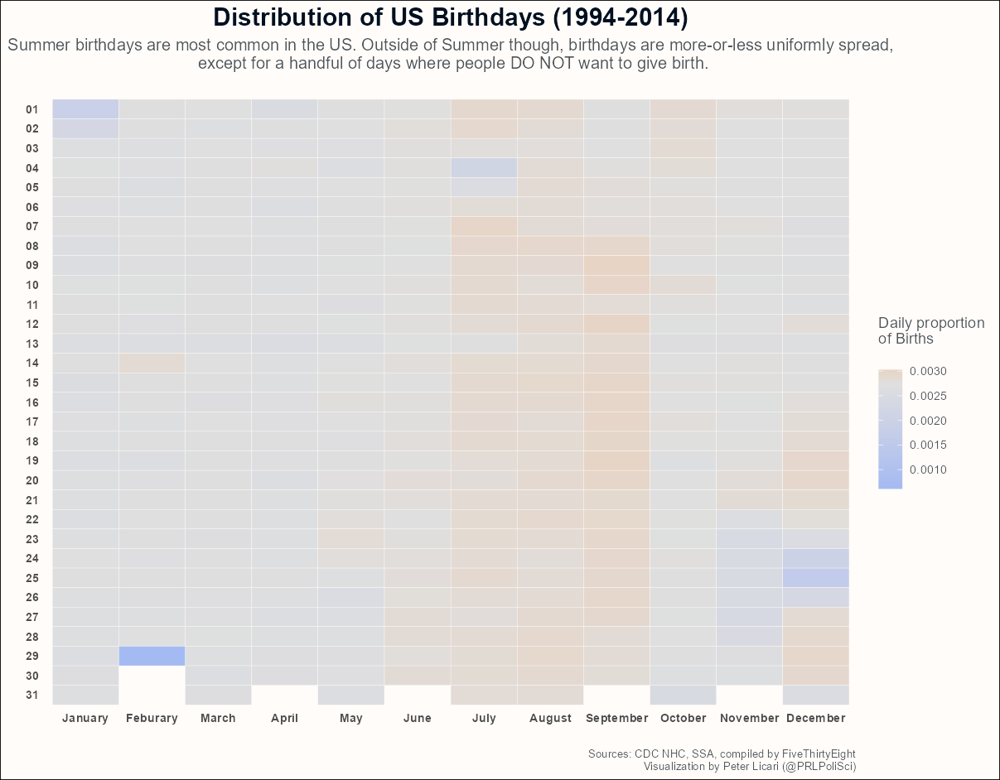
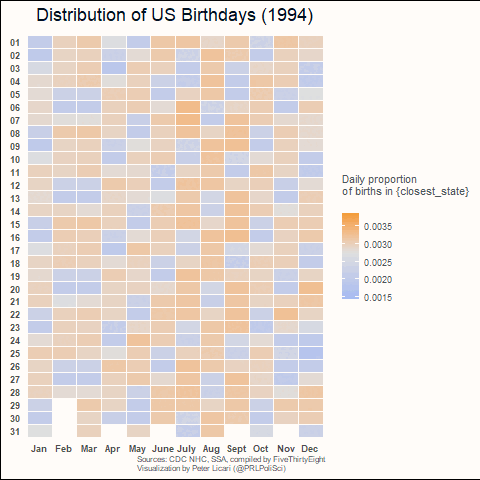
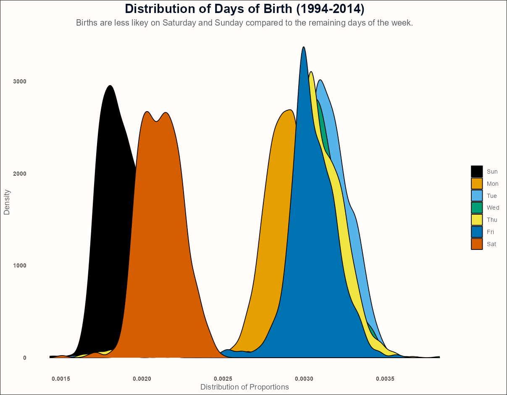

Here are two fun facts about 30: And a small test of the new github
30 is the last age that people will experience that can be articulated as product of sequential primes, starting at the first prime (2\times3\times5=30)1.
30 happens to now be, at the time of publishing this piece, my age!
Folks who play with data often make the convenient assumption that birthdays are distributed uniformly along the dates of the Gregorian calendar. However, as with all convenient assumptions, we know that this isn’t actually true! Thanks to things like superstition, holidays, extreme weather events, and war, conception (and therefore births) don’t just happen at random within a population.
So, to celebrate my own birthday, I wanted to look at how birthdays are distributed within the US—and how this distribution might have changed over time.
The Data
As part of their 2016 article Some People Are Too Superstitious To Have A Baby On Friday The 13th, Carl Bialik (with analytical support provided by Andrew Flowers) published birthdate data sourced from the Centers for Disease Control and Prevention’s National Health Center for Health Statistics (spanning 1994-2003) and the Social Security Administration (spanning 2000-2014). Propitiously, 1994 is my year of birth! So I’m somewhere in that tally! (To deal with the overlap, I only look at data from 2004 on from the SSA data)2.
I analyzed this data in R (R version 4.2.2 (2022-10-31 ucrt)) using the {Tidyverse} family of packages as well as {gganimate} to make a gif looking at how dates have shifted over time.
Results
Here is the code to read-in and merge the data—as well as tabulate the proportions. I first calculate the proportion within each year (so to see what proportion of births occurred on January 1 1994, 1995, 1996, etc) and then the proportions overall (to see how many happened on January 1 in the main dataset).3 Let’s first look at how things are overall.
Show the code
### Read-in CDC datacdc <-read_csv('data/US_births_1994-2003_CDC_NCHS.csv',show_col_types =FALSE) %>%select(births, year, date)### Read-in SSA datassa <-read_csv('data/US_births_2000-2014_SSA.csv',show_col_types =FALSE) %>%filter(year >=2004) %>%select(births, year, date)full_bdays <-bind_rows(cdc,ssa) %>%# Merge datagroup_by(year) %>%mutate(sum_year =sum(births)) %>%mutate(prop_year = births/sum_year) %>%# Daily sum by yearungroup() %>%mutate(md =strftime((as.Date(date, format ="%m/%d/%Y")), format ="%m%d") ) %>%group_by(md) %>%mutate(md_sum =sum(births))%>%ungroup() %>%mutate(md_prop = md_sum/sum(births)) # Daily sum overall
Distribution of US Birthdays 1994-2014
Below is an overall distribution of US birthdays spanning the full length of the data.
Show the code
full_bdays %>%mutate(month =strftime((as.Date(date, format ="%m/%d/%Y")), format ="%m"),day =strftime((as.Date(date, format ="%m/%d/%Y")), format ="%d")) %>%distinct(md, md_sum, .keep_all =TRUE) %>%ggplot() +aes(y = day, x = month, fill = md_prop) +geom_tile(color ='#fffcf9') +scale_y_discrete(limits = rev) +scale_x_discrete(labels =c("January", "Feburary", "March","April", "May", "June","July", "August", "September","October", "November", "December")) +scale_fill_gradient2(high ="#f18f01",mid ="#dfdfdf",low ="#A4BAF2",midpoint =mean(full_bdays$md_prop),name ='Daily proportion\nof Births\n') +theme_minimal() +xlab("") +ylab("") +labs(title ='Distribution of US Birthdays (1994-2014)',subtitle ='Summer birthdays are most common in the US. Outside of Summer though, birthdays are more-or-less uniformly spread,\n except for a handful of days where people DO NOT want to give birth.\n',caption ='Sources: CDC NHC, SSA, compiled by FiveThirtyEight\nVisualization by Peter Licari (@PRLPoliSci)') +theme(text =element_text(color ="#4E555B"),panel.grid =element_blank(),plot.background =element_rect(fill ='#fffcf9'),axis.text.x =element_text(face ='bold'),axis.text.y =element_text(face ='bold'),plot.title =element_text(hjust = .5, , size =18, face ='bold', color ="#001021"),plot.subtitle =element_text(hjust = .5, size =12, color ="#4E555B"),plot.caption =element_text(hjust =1, size =8, color ="#4E555B"))

There are a few really interesting things about this chart! First is the lack absolute variation. If birthdays were truly uniformly spread, we’d expect the probability to be around 0.0027—which perfectly matches the actual median value in the data ( 0.0027)! Second, to the extent that some days do go above this average, the most frequent days of birth tend to be in mid-late summer. Which makes sense! The average human gestation is about 40 weeks, putting the rough period of conception in the preceding fall—a period where many folks start to spend more time indoors after the summer4. Which means, well, more opportunities for conception.
Apart from that, what strikes me is that there appear to be more days where people try to avoid giving birth versus trying to give birth. The giant outlier at February 29th makes sense thanks to leap years—but it seems that people are trying their best to avoid giving birth on Christmas, New Years, and (to a lesser extent) the 4th of July and Halloween. The slight orange pattern in the days surrounding those excepions probably reflect the efforts of soon-to-be moms to avoid having kids born on those holidays. Though it does seem that some folks do try to schedule more births than average around Valentine’s Day? Interesting!
Does this distribution over time?
That all makes sense given the number of years we’re looking at as well as the US’ cultural context. But do these values change over time—and is there any structural pattern to any such change? The animated graph below shows how things might or might not change over time.
Show the code
full_bdays %>%mutate(month =strftime((as.Date(date, format ="%m/%d/%Y")), format ="%m"),day =strftime((as.Date(date, format ="%m/%d/%Y")), format ="%d")) %>%distinct(year, date, prop_year, .keep_all =TRUE) %>%#filter(year == 2014) %>%ggplot() +aes(y = day, x = month, fill = prop_year) +geom_tile(color ='#fffcf9') +scale_y_discrete(limits = rev) +scale_x_discrete(labels =c("Jan", "Feb", "Mar","Apr", "May", "June","July", "Aug", "Sept","Oct", "Nov", "Dec")) +scale_fill_gradient2(high ="#f18f01",mid ="#dfdfdf",low ="#A4BAF2",midpoint =mean(full_bdays$prop_year),name ='Daily proportion\nof births in {closest_state}\n') +theme_minimal() +xlab("") +ylab("") +labs(title ='Distribution of US Birthdays ({closest_state})',caption ='\nSources: CDC NHC, SSA, compiled by FiveThirtyEight\nVisualization by Peter Licari (@PRLPoliSci)') +theme(text =element_text(color ="#4E555B"),panel.grid =element_blank(),plot.background =element_rect(fill ='#fffcf9'),axis.text.x =element_text(face ='bold'),axis.text.y =element_text(face ='bold'),plot.title =element_text(hjust = .5, , size =18, face ='bold', color ="#001021"),plot.subtitle =element_text(hjust = .5, size =12, color ="#4E555B"),plot.caption =element_text(hjust =1, size =8, color ="#4E555B")) +transition_states(year)

I was blown away by this! I figured from the aggregate chart that there would also be a lot of gray here—but we’re actually seeing a lot of day-to-day variation within individual years! And look at that reverse Tetris patterning! It’s fascinating!! (Though, if you look closely, you’ll notice that Christmas, New Years, July 4th, Vallentine’s day, and Halloween tend to keep their characteristic patterns seen in the aggregate data).
I was initially flabbergasted by the movement. But then I noticed that, most of the time, it’s consecutive chunks of 2 blues shifting next to 5 blocks of orange. Which, to me, suggested that people are generally trying to avoid having their kids on a weekend.
Let’s investigate that! The chart below looks to see if this hunch is correct.
Show the code
full_bdays %>%mutate(wday = lubridate::wday(as.Date(date, format ="%m/%d/%Y"), label = T)) %>%distinct(year, date, prop_year, .keep_all =TRUE) %>%ggplot() +aes(x = prop_year, fill =as.factor(wday)) +geom_density() +xlab('Distribution of Proportions') +ylab('Density') +labs(title ='Distribution of Days of Birth (1994-2014)',subtitle ='Births are less likey on Saturday and Sunday compared to the remaining days of the week.') +theme_minimal()+theme(text =element_text(color ="#4E555B"),panel.grid =element_blank(),plot.background =element_rect(fill ='#fffcf9'),axis.text.x =element_text(face ='bold'),axis.text.y =element_text(face ='bold'),plot.title =element_text(hjust = .5, , size =18, face ='bold', color ="#001021"),plot.subtitle =element_text(hjust = .5, size =12, color ="#4E555B"),plot.caption =element_text(hjust =1, size =8, color ="#4E555B")) + ggthemes::scale_fill_colorblind(name ="")

Looks like this hunch is spot-on! Sundays and Saturdays appear to be less frequent than any of the other 5 days of the week. After consulting with some experts (my mother and wife—the mother of my child), our hypothesis is that many doctors are off on weekends. This means that much of the medical team that soon-to-be-parents have spent most of their pregnancy with may not be available on the weekends. Women may thus be more likely to induce on a weekday or try to “hold on” (for want of a better term) until their care team is available. Basically, the thought is that a baby born on the weekend was coming on that day—no negotiations.
Concluding thoughts
So let’s wrap up what we’ve learned here!
When looking at multiple years worth of data all aggregated up, it seems like the assumption that birthdays are uniform is not too terribly far off from the truth. More than anything, it seems that moms-to-be to their best to avoid very specific days to give birth on. (Though, apparently, Valentine’s Day may run counter to this!)
When looking at individual years, a lot more variability between individual days emerges. When looking at year-over-year evolutions in an animated format, it creates a super tripy reverse-Tetris pattern. But said pattern revealed that the days comprising weekends have fewer births than days comprising weekdays.
This was a very fun way to ring-in my 4th decade!5 In the process, I’ve now found myself with a few more birthday-related questions that I want to dig in to! So it goes with research questions. Maybe I’ll try to investigate them in birthdays to come! Could be a fun little birthday tradition. Let’s see how it, and the next decade, go!
Footnotes
It also happens to be one of two birthdays that people could experience that can be expressed as the product of at least 3 sequential primes. The only other set meeting this last definition is 3\times5\times7=105. I’ll be sure to let y’all know if I hit that mark.↩︎
Fortunately, the folks at FiveThirtyEight already harmonized the columns for these two data sources, making merging a breeze!↩︎
This actually reminds me of an important caveat that I should put out there. I am assuming that these administrative records reflect the “Truth” about when people were born. But, though the folks compiling these records try their absolute best, errors occur at all parts of the aggregation process! Some birth days or years are almost certainly inputted incorrectly, whether at the local level or later on in the aggregation pipeline. Administrative/government data does not mean that it is without error.↩︎
Though, here in Florida, my hunch is that more time is spent indoor in the Summer than in the Fall—so maybe there are subregional variations in births?↩︎
This wasn’t the only thing I did; my life isn’t that sad. I got some steak and cake with my wife, parents, and younger brother (who crushed making the aforementioned steak) and I ran a 30k this morning.↩︎
![]()